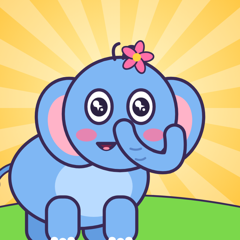

Clover Hollow Tales
A new story every dayShort, gentle animated stories for preschoolers and young kids (ages 2 to 7), about kindness, friendship, honesty, courage and big feelings. Every episode is 2 to 3 minutes long and ends with a simple lesson families can talk about together.
Meet the friends of Clover Hollow: Wobble the clumsy little elephant, Peanut the brave tiny mouse, Luna the shy firefly, Splash the show-off frog, Grumbo the grumpy-but-kind badger, and wise Granny Owl.
Watch on YouTube: search for Clover Hollow Tales.